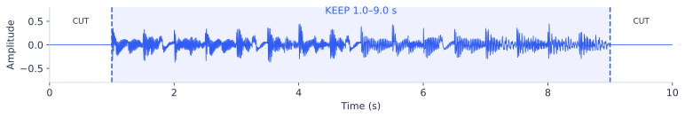

重点 01 / 文字 → 纯音乐
一句描述，怎么变成一段音乐？
音频剪干净，配上描述，压成 token。模型猜错哪个 token，就对那个位置算 loss、更新参数。
① 业界的数据，里面实际是什么？
MusicCaps：5,521 条、每段 10 秒。 每行是录音 ID、起止时间、乐器 / 风格列表、音乐人写的描述；音频需另行取得。它同时包含有人声与器乐的片段。数据卡
按其字段构造一行教学样本：
录音 ID：demo_042 start_s：40 end_s：50
caption：明亮的键盘器乐，均匀鼓点，无人声。
取得对应音频 → 截取第 40–50 秒 → 得到 10 秒 WAV
真实训练更大：MusicGen 使用约 2 万小时授权音乐，带文字描述、BPM 和标签；MusicCaps 用于其评测。这里借它理解样本结构，不把它当成 MusicGen 的预训练库。MusicGen §3.2
② 洗完后，这一条变成什么？
下面是程序合成的教学音频。原件首尾各有 1 秒空白，内容是 8 秒器乐。
原始：10 秒 / 48 kHz / 双声道
数组形状 [2, 480000]
清洗：8 秒 / 32 kHz / 单声道
数组形状 [1, 256000]

| 这一批有 4 条 | 发现的问题 | 处理 |
|---|---|---|
| 042：键盘 + 鼓 | 首尾空白，描述正确 | 剪成 8 秒，保留 |
| 043：与 042 同录音 | 只是文件格式不同 | 去重，不另放测试集 |
| 044：描述写“无人声” | 听到哼唱 | 纯音乐任务剔除，或改标签转其他任务 |
| 045：波形严重削平 | 放大造成破音 | 剔除；调低音量修不回失真 |
交付的核心是一对：
{
"text": "明亮的键盘器乐，均匀鼓点，无人声。",
"audio": "clean-8s-mono.wav",
"duration": 8,
"sample_rate": 32000
}
有音频、没描述，怎么合成文字配对？
同一条 8 秒音频
听审 / 标签器：器乐、键盘、鼓；节拍检测：120 BPM
↓ 只写已经验证的属性
描述 A：“明亮的键盘器乐，均匀鼓点，无人声。”
描述 B：“120 BPM，键盘主奏，带鼓的纯音乐。”
↓
得到 2 条 text–audio 配对，但只有 1 条独立音频
再做一次保音高变速 1.25 倍：8 秒变 6.4 秒、120 BPM 变 150；描述 B 的 BPM 必须改成 150。标签转描述可参考 LP-MusicCaps，音频增强后同步修改属性可参考 Mustango。LP-MusicCaps · Mustango
描述不能凭空补“悲伤、小提琴”。合成描述后要回听校验；同一原曲的改写、切片、变速版都放同一训练 / 测试分区。
③ 喂给 MusicGen 的不是 WAV 文件名
示意 token ID（未运行真实 EnCodec）
码本 1：[8, 17, 42, ...] 约 400 个时间位置
码本 2：[91, 203, 66, ...]
码本 3：[...]
码本 4：[...]
放大码本 1 的一个位置：
输入 = 文字向量 + 历史 [8]
目标 = 17
token 是音频码本编号，不等于歌词或一个音符。真实 MusicGen 交错多个码本，对有效位置求平均 loss；下面只演示一个位置。实现说明
④ 它怎么“往正确方向学”？
已知正确答案：token 17
真实计算的三分类 softmax 玩具模型。固定输入 x=1，logits=W×x。
起初正解概率只有 10%。点击训练，观察它上升。
只给文字与历史 [8]，按当前概率抽一个 token。学过后更容易抽到 17，但不一定每次都抽到。
第一步：p=0.10 → loss=2.303 → 梯度=−0.90。减去负梯度会抬高正确类权重。真实网络将梯度传回 Transformer 的参数；目标音频不变，模型参数改变。
⑤ 完整推理：从文字一路生成到声音
标签错会直接教错： 若音频有人声，描述却写“无人声”，模型就会把两者一起学习。这就是清洗、筛选、打标影响模型的具体位置。